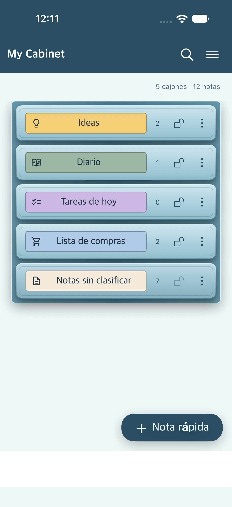
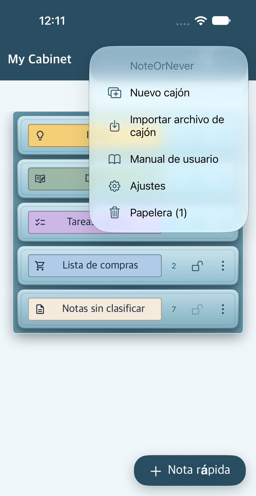
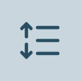
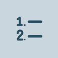
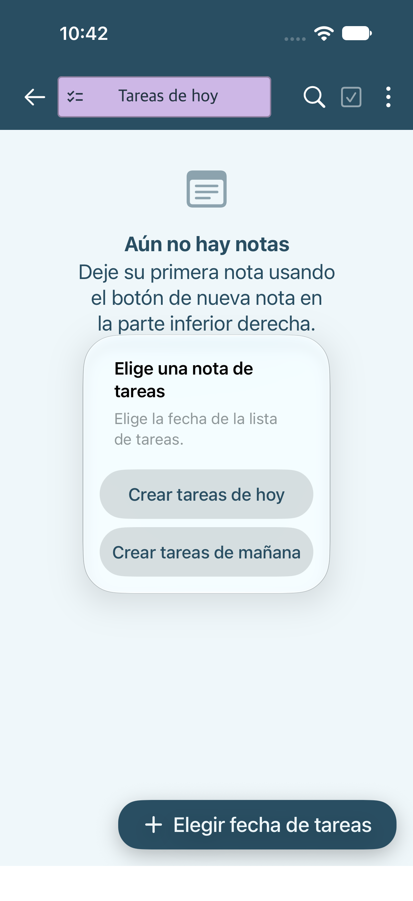
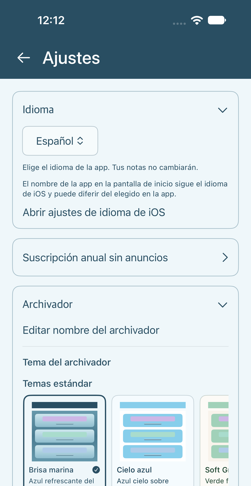

Apunta Ya — Manual de usuario
Versión 0.9.37
Guarde sus ideas en notas, los planes del día en tareas y los productos que necesita en listas de compras. Puede volver a abrir esta guía en cualquier momento desde la tarjeta “Manual de usuario” en Configuración.
1. Primer uso y configuración de pantalla
Apunta Ya es una aplicación que recopila notas en cajones por tema. Cuando tocas el cajón, se abre una lista de notas y cuando tocas una nota, se abre una pantalla para escribir el contenido.

Buscar herramientas en el encabezado
La búsqueda superior busca en todos los cajones. El menú (☰) contiene Nuevo cajón, Importar cajón, Manual, Ajustes y Papelera. El nombre sigue visible.

Crea tu primera nota
Elige menú (☰) → Nuevo cajón, escribe un nombre y abre el cajón para crear una nota. El texto se guarda automáticamente.
Para escribirlo de inmediato, presione ＋ Nota rápida en la parte inferior de la pantalla. Comienza con una nota sin clasificar y puede seleccionar el cajón en el que desea guardarla utilizando el nombre del cajón en el encabezado de la nota.
¿Qué cajón debo usar?
| Cajón | usar |
|---|---|
| cajón normal | Recopilamos artículos, fotografías, fotografías y archivos por temas, como ideas, viajes y trabajo. |
| Diario | Mantenga notas por fecha y léalas nuevamente en un calendario o lista de registros. |
| Tareas de hoy | Administre las tareas pendientes por fecha, hora, notificaciones, cronograma de repetición y estado de finalización. |
| Lista de compras | Administre artículos, cantidad y estado de compra para cada artículo comestible. |
| Notas sin clasificar | Reúna todas las notas para las que aún no haya decidido colocar un cajón. |
Cambiar el nombre de la cómoda
Abre menú → Ajustes → Archivador y edita el nombre. Usa entre 1 y 40 caracteres, sin dejarlo vacío. Los temas están debajo en la misma tarjeta.
Pantalla ancha y pantalla completa
En un iPad con pantalla ancha, selecciona el cajón a la izquierda para ver su lista o una nota a la derecha. Pulsa el botón de pantalla completa para ampliar el contenido.
↑ Ir al índice2. Crear y gestionar cajones
Al crear un cajón se elige un color de etiqueta libre si lo hay. La marca pequeña indica que otro cajón ya usa ese color. También puedes elegirlo.
crear un cajón
Elige menú (☰) → Nuevo cajón. Para un archivo existente, usa Importar cajón en ese menú.
Cambiar nombre, color de etiqueta e ícono
Haga clic en ver más(…) en el lado derecho del cajón y seleccione Configuración del cajón. Cambie el nombre, elija un círculo o icono de color y conviértalo en Guardar. La etiqueta muestra el icono seleccionado junto con el nombre del cajón. Los nombres largos fluyen dentro del espacio de nombres.
Ver más notas sin categoría abre directamente la configuración del cajón. El bloqueo y el cifrado están guiados por Capítulo 11.
Cambiar el orden de los cajones
Mantenga presionado el cajón y arrástrelo hacia arriba o hacia abajo hasta la ubicación deseada. La ubicación de las notas no clasificadas es fija.
Eliminar un cajón
Eliminar un cajón mueve sus notas a la Papelera, conservando origen, adjuntos y fechas de borrado anteriores. El cajón cifrado requiere autenticación y conserva la protección. Sin el cajón original, una nota normal vuelve a las notas sin clasificar; una cifrada vuelve a un cajón recuperado con el mismo ID. Las demás notas siguen en la Papelera.
Recrea un cajón dedicado
Diario, Tareas pendientes y Lista de compras mantienen sus funciones exclusivas incluso si cambias el nombre o el ícono. Los cajones dedicados eliminados se pueden crear en Configuración → Cajón dedicado. Las notas antiguas no volverán automáticamente al cajón dedicado recién creado.
↑ Ir al índice3. Escribe y edita notas.
Nuevas notas y guardado automático
＋ Nueva nota en cajón crea una nota en el cajón actual. ＋ La nota rápida comienza a partir de una nota no clasificada y, antes de guardarla por primera vez, puede seleccionar el cajón para guardar presionando el nombre del cajón en el encabezado y confirmando con el botón de selección. Cuando selecciona la lista de tareas pendientes o de compras de hoy, cambia a un formato de lista que coincide con ese cajón.
Cualquier cambio que ingrese se guardará automáticamente sin un botón para guardar. Puedes reabrir lo que escribiste volviendo a la lista. Simplemente cierre la nueva nota sin ingresar nada. Para deshacerse de la nota Eliminar el título o el cuerpo de una nota ya guardada es editar el contenido., muévala a la papelera. Si aparece un mensaje de error al guardar, verifique la información e inténtelo nuevamente.
ordenar la lista
Tareas de hoy y Diario usan la fecha del registro en lugar de la edición. Elige fecha más reciente o más antigua primero. Los favoritos no cambian el orden por fecha de las tareas.
Marcar notas importantes
Si hace clic en la estrella luminosa (☆) a la derecha del título, cambiará a una estrella rellena (★). Presione nuevamente para apagarlo. Puede mostrar notas importantes primero en Configuración → Vista de notas. El título de la fecha de las notas de tareas pendientes de hoy no muestra una estrella de nota. Una estrella después de un elemento de la lista indica la importancia de esa tarea o elemento.
Mover a otro cajón
- Abra una nota normal y presione el ícono de mover al lado del nombre del cajón en el encabezado.
- Seleccione el cajón normal que desea mover y presione el botón de mover. La selección por sí sola no se mueve y la cancelación mantiene el cajón actual. Confirme cuando se le solicite bloquear o eliminar la protección.
Las notas de las tareas pendientes, la lista de compras y el diario de hoy no se pueden mover directamente a otro cajón y el icono de movimiento no se muestra. Para obtener información sobre cómo mover varias notas a la vez, consulte Seleccionar varias notas.
Guía de iconos de la barra de herramientas de edición de notas
A continuación se muestra la barra de herramientas para notas generales. Los iconos de luz no están disponibles actualmente. Para el formato de fuente, primero seleccione el texto que desea cambiar y luego aplíquelo. Las herramientas dedicadas para la lista de tareas pendientes/compras de hoy se explican en Capítulo 6 y Capítulo 8.
Barra de herramientas superior: Deshacer, Adjuntar, Voz
| icono | nombre | Que haces |
|---|---|---|
 | Deshacer | Devuelve el contenido del texto modificado durante la edición actual a su estado anterior. Si no hay nada que revertir, se mostrará en color claro. |
 | Rehacer | Vuelve a aplicar los cambios corporales revertidos. Si no hay nada que volver a aplicar, se mostrará en color claro. |
 | cámara | Tome una nueva foto y adjúntela a la nota. |
 | Fotos | Seleccione y adjunte una foto desde su teléfono. |
 | Dibujo | Haz un dibujo en un lienzo blanco y ponlo en una nota. |
 | Adjuntar archivo | Seleccione un archivo y adjúntelo a la nota. Si toca el archivo adjunto, puede abrirlo con una aplicación compatible. |
 | entrada de voz | Escribe lo que dijiste en letras. Se coloca en el título o texto en la posición donde comenzó la entrada de voz y reemplaza el carácter seleccionado, si lo hay. |
| Registro adjunto | Graba tu voz o sonido y adjúntalo como un archivo de audio. A diferencia de STT, no se convierte a letras. |
Barra de herramientas inferior: formato de fuente, lista, fecha
| icono | nombre | Que haces |
|---|---|---|
| Atrevido | Muestra el texto seleccionado en negrita. Presione nuevamente para desactivar la visualización en negrita. | |
 | consejo | Inclina el texto seleccionado. Presione nuevamente para apagarlo. |
 | subrayar | Subraya las letras seleccionadas. Presione nuevamente para apagarlo. |
 | Resaltar | Agrega un fondo amarillo detrás del texto seleccionado para enfatizarlo. |
 | Tamaño de fuente | Abra el menú Tamaño de fuente y redúzcalo a A− o auméntelo a A+. Primero selecciona el personaje que deseas cambiar. |
 | color de fuente | Seleccione el color de fuente entre negro, rojo o azul. |
 | Interlineado | Aumentar o disminuir el interlineado en el cuerpo del texto. Esto es diferente de la función para cambiar el tamaño de fuente. |
 | Lista de casillas de verificación | Convierte la línea actual en una lista de verificación o le quita formato a la lista de verificación. Puede marcar la finalización haciendo clic en la casilla de verificación. |
 | lista de viñetas | Reemplaza la línea actual con una lista que comienza con un punto. |
 | Lista numerada | Reemplaza la línea actual con una lista de números. Los números para el siguiente elemento continúan automáticamente. |
 | marca de tiempo | Inserta la fecha y hora actuales en la posición del cursor en el texto. |
Cuando coloca el cursor sobre el título, la barra de herramientas de formato de texto se oculta y reaparece cuando hace clic en el texto. Si su pantalla es estrecha, puede deslizar la barra de herramientas hacia la izquierda o hacia la derecha para ver otras herramientas. En pantalla completa, puede deslizar la barra de herramientas hacia arriba o hacia abajo.
Solo se aplica a una línea un formato entre casilla de verificación, viñeta o lista de números. El formato cambia cuando presiona un botón de lista diferente. Cuando presiona Enter en una lista de números, el siguiente número continúa y cuando presiona Enter en un elemento vacío, la lista finaliza. Las restricciones sobre el título, el cuerpo y los archivos adjuntos se pueden consultar en Limitaciones de capacidad y longitud.
↑ Ir al índice4. Adjunte y comparta fotografías, imágenes y archivos.
Insertar fotos, grabaciones y archivos
En la barra de herramientas superior de una nota general, seleccione Cámara, Foto, Pintura, Adjuntar archivo, Adjuntar grabación. Permita los permisos necesarios del dispositivo y tome una fotografía o seleccione un archivo. Consulte Información de la barra de herramientas de edición de notas para conocer las funciones de cada herramienta y las diferencias en el adjunto de entrada/grabación de voz.
Cambiar la ubicación de fotografías e imágenes.
Cambie la posición haciendo clic en Más (…) en la esquina superior derecha de la foto → Mover hacia arriba o bajar. También puedes mantener presionada la foto y arrastrarla hacia arriba o hacia abajo. La línea que se muestra es donde la colocarás y se desplazará automáticamente cuando la arrastres hasta el borde de la pantalla. Mientras editas, puedes revertir el movimiento con Deshacer.
Mover el archivo adjunto a otra nota
- Fotos, imágenes, grabaciones y archivos generales para mover... En el menú, toque Mover a otra nota.
- Seleccione el cajón normal que contiene la nota que desea recibir. Desbloquee o descifre si es necesario.
- Seleccione la nota que desea recibir y presione Ir. También puedes encontrar el título de una nota buscando.
Mueve un archivo adjunto a la vez. Se retira de la nota original y se añade al final de la nota de destino. Los cajones especiales, como Diario, Tareas de hoy, Lista de compras y Copia de seguridad, no pueden ser el origen ni el destino. Al pasar de un cajón cifrado a uno sin cifrar, revisa el aviso sobre el cambio de protección. Si cancelas el traslado o la autenticación, el archivo adjunto permanece en la nota original.
Mientras la nota original siga abierta, usa Deshacer en la barra superior para devolver el archivo adjunto a su posición original y Rehacer para trasladarlo otra vez. Las ediciones anteriores se conservan en el historial. Puede que se solicite de nuevo el desbloqueo o la autenticación de cifrado. Si cancelas la autenticación o falla la operación, ninguna de las notas cambia y puedes volver a intentarlo después. Al cerrar la nota se borra el historial de deshacer de esa sesión de edición.
Ver más grande y girar
Haga clic en una foto o imagen para abrirla más grande. Utilice dos dedos para acercar o alejar, o toque dos veces para acercar. Si cambia la dirección con el botón de rotación y lo guarda, Los archivos adjuntos existentes en la nota se reemplazarán con imágenes rotadas. no se guardará y si lo cierra, no se aplicará la rotación. No cambiará la galería original en su teléfono.
Dibujar y marcar fotografías
- Un dibujo en blanco comienza con Paint en la barra de herramientas superior. Para mostrarlo sobre una foto, ábrelo más grande y toca Editar.
- Elija un color, establezca el grosor del lápiz usando el control deslizante a continuación y dibuje en el lienzo.
- Cuando activas Eraser, el control deslizante cambia al tamaño del borrador. Apague el borrador nuevamente o seleccione un color para volver al lápiz.
- Ajuste los trazos de la imagen actual con Deshacer/Rehacer.
- Cuando la imagen en blanco esté completa, la edición de la foto se adjuntará a la nota cuando haga clic en Guardar como copia. Cerrar con la X izquierda y descartar los cambios no los guardará.
Si sobrescribe una foto y la guarda, Se agrega una copia del nuevo archivo adjunto y el archivo adjunto existente permanece. Si no le gusta la copia que guardó, elimínela. Una vez guardados, los trazos de esa copia no se pueden borrar revirtiendo la edición anterior. La resolución puede disminuir durante el proceso de edición/rotación y guardado, así que guarde el original de alta resolución por separado.
También puedes ver el manual de solo lectura y fotografías de diarios anteriores en formato más grande. La pantalla ampliada en estado de solo lectura solo muestra un botón de cerrar.
Compartir como PDF
- Abra una nota y presione el botón Compartir en el encabezado.
- En la ventana para compartir de iOS, seleccione la aplicación y el destinatario deseados, como KakaoTalk.
Envíe el título, el cuerpo, el formato del texto, las fotografías y las imágenes en formato PDF. Los destinatarios pueden leerlo sin Apunta Ya. Los archivos grabados y generales solo muestran el nombre y el tipo, y el archivo original no está incluido en el PDF. Si cierra la ventana para compartir, no se enviará. El PDF enviado es una copia en el momento de compartirlo y no refleja ninguna edición posterior de la nota.
↑ Ir al índice5. Lleva un diario
Continuar el récord de hoy
Cuando abro el cajón del diario, sigo escribiendo los registros de hoy. La fecha se muestra automáticamente y se puede escribir un título breve por separado. La primera vez que ingresa información, se guarda y no se crean notas en blanco para los días en los que no registró nada.
Leer y editar registros pasados
Seleccione un día con un registro desde el ícono del calendario o ábralo desde la lista de registros. Los registros anteriores son de solo lectura, pero puedes ampliar las fotos, marcarlas como importantes, compartirlas y moverlas a la papelera.
Cuando presione Desbloquear Editar, lo guiaremos a través de lo que significa conservar los registros de ese día. No lo mantiene como de solo lectura y Editar permite editar el registro abierto actualmente. Si lo cierro y lo vuelvo a abrir, vuelve al modo de solo lectura. Incluso después de la medianoche, los registros que ya haya escrito se pueden guardar hasta que cierre la pantalla.
Los diarios no pasan directamente a otros cajones. Incluso si lo restaura desde la Papelera de reciclaje, conservará su fecha histórica. Para cambiar el nombre y recrear cajones, consulte Crear y gestionar cajones.
↑ Ir al índice6. Configuración de tareas, hora, notificaciones y repetición de hoy
Crear listas de hoy o mañana y restaurar las eliminadas
Si faltan ambas listas, usa ＋ para elegir hoy o mañana. Si falta una fecha, solo aparece su botón; si ambas tienen contenido, se oculta. Las casillas vacías no cuentan, pero los archivos adjuntos sí. Los filtros de búsqueda no cambian esta regla. Crear mañana no adelanta las tareas pendientes de hoy.

Al eliminar una lista, el original y sus adjuntos quedan en la papelera. Las repeticiones y los traspasos no recrean esa fecha eliminada. Crear manualmente inicia una lista nueva. Si ya existe otra lista de esa fecha, muévela a la papelera antes de restaurar el original. Los conflictos siguen seleccionados en la restauración múltiple. Los originales sobrescritos solo se recuperan si hay pruebas locales; únicamente se copian los adjuntos que aún existen.
Agregar/hecho/marcar elemento como importante
- Agregar elemento (+): Agregar una nueva tarea. También puede escribir el nombre del elemento y presionar Enter para continuar con el siguiente elemento.
- caja: Cambios completados e incompletos. Los elementos completados tendrán un tachado.
- Ver más artículos a la derecha (…): Abrir configuración de tiempo·Configuración de notificación·Configuración de repetición·Marcas de prioridad·Eliminar elementos.
- Destacar nota: activa o desactiva el resaltado en el menú de elementos. Los artículos importantes están marcados con estrellas. Está separado de la estrella en el título de la fecha.
- Eliminar elemento: Elimina solo una línea seleccionada. Borrar un elemento repetido también detendrá repeticiones futuras. Distíngalo del botón de la papelera en el encabezado, que elimina la nota completa.
Para configurarlo con la herramienta superior, primero coloque el cursor haciendo clic en la letra del elemento a cambiar. Los botones de reloj, campana y repetición se aplican al elemento actual. Las herramientas que no están disponibles aparecen atenuadas. Si no puede ver todas las herramientas, intente deslizar la barra de herramientas hacia la izquierda o hacia la derecha.
Reordenar artículos
Encienda Modo de movimiento para elementos con flechas hacia arriba y hacia abajo superpuestas en la parte superior. Mantenga presionado el controlador de movimiento que aparece al lado del elemento y arrástrelo hacia arriba o hacia abajo. Cuando haya terminado de moverse, presione el mismo botón nuevamente para volver al modo de escritura.
Establecer una hora programada
- A la derecha del elemento... → Presione Establecer hora. Alternativamente, coloque el cursor sobre un elemento y presione el botón superior del reloj.
- Establece una hora y confirma. El elemento mostrará la hora programada.
- Para deshacerse de él, abra Configuración de hora nuevamente y toque Sin hora.
Simplemente establecer una hora no activa una notificación. Si desea notificaciones, configúrelas por separado.
Recibir notificaciones
- A la derecha del elemento... → Presione Configurar aviso.
- Si tiene una hora programada, seleccione notificaciones a la hora, 10 minutos antes o 30 minutos antes. Si no tiene un horario programado o desea recibirlo en otro horario, use Elegir hora del aviso.
- Ahorrar. Si su dispositivo solicita permiso de notificación, concédaselo. Cuando reciba las instrucciones correctas de permiso de notificación, verifique también la configuración del dispositivo.
El punto de tiempo seleccionado se muestra en el círculo de la izquierda. Los permisos necesarios y las acciones de notificación se describen debajo de la lista de selección. Para desactivarlo, seleccione Sin aviso. Si elimina una hora programada, las notificaciones basadas en esa hora también se desactivarán. La hora de notificación que especifique se gestiona por separado. Las notificaciones establecidas para un elemento recurrente también se aplicarán a repeticiones futuras.
Las notificaciones muestran instrucciones de confirmación en lugar de contenido de tareas pendientes. La llegada puede retrasarse según la configuración de notificación y ahorro de energía de su dispositivo. Las notificaciones de eventos del calendario y las notificaciones de aplicaciones están separadas, así que verifique también Capítulo 7.
¿Qué pasa con los elementos incompletos?
Las tareas pendientes sin repetición ni vínculo de calendario pasan al día siguiente. Conservan importancia, hora, alerta, cantidad y número de aplazamientos. Las nuevas tareas con el mismo nombre son distintas. Las completadas, recurrentes, historial y adjuntos quedan en el día original. Las fechas eliminadas no se recrean automáticamente.
Crea tareas repetibles
- Escriba el nombre del elemento y… → Presione Repetir tarea.
- Elija entre Seleccione diario, día laborable, fin de semana, día de la semana. En la selección de días, puede seleccionar varios días de la semana.
- Presione Guardar. Puede cambiar la configuración del elemento volviéndola a abrir.
Por ejemplo, si solo selecciona el jueves, tendrá un nuevo elemento sin terminar cada jueves. Repita independientemente de si se completó la última vez.
- Comprobar finalización es la marca de finalización del día. Posteriormente, la iteración continúa.
- Cambiar nombre, día de la semana y marcas importantes. refleja elementos recurrentes incompletos después de hoy. Mantener registros pasados y elementos completados.
- No repetir ni eliminar elementos cancela iteraciones futuras y también elimina entradas de iteraciones futuras incompletas creadas previamente.
- Cuando abres la aplicación unos días después, se complementa con lo que necesitas para hoy. No crea una lista de todas las fechas pasadas con solo repeticiones.
Los elementos recurrentes no se trasladan al día siguiente como los elementos habituales sin terminar. Los programas recurrentes creados por separado con el mismo nombre se administran por separado. Los elementos vinculados a un calendario no se pueden cambiar a tareas recurrentes.
↑ Ir al índice7. Conéctate con el calendario de tu teléfono
Utilice eventos del calendario conectado a su teléfono. Deberá permitir el acceso al calendario y luego seleccionar el calendario que aparece en la lista. No se proporciona integración directa con Naver Calendar.
| función | ¿A qué te dedicas? |
|---|---|
| Añadir al calendario | Envía las tareas de Apunta Ya a tu calendario. Las actualizaciones futuras cambiarán el calendario. |
| Importar del calendario | Importe los eventos de hoy desde su calendario a Tareas de hoy. Las actualizaciones posteriores del calendario reemplazarán la entrada de Apunta Ya. |
Registrar tareas pendientes en el calendario
- Coloque el cursor en el elemento que desea enviar en las tareas pendientes de hoy o de mañana y toque el ícono Publicar en el calendario con una flecha en la parte superior.
- Consulta y registra el calendario, la fecha, la disponibilidad durante todo el día, la hora de inicio y finalización y las notificaciones.
- Después de editar una tarea pendiente, actualizarla desde el mismo botón cambiará el horario conectado existente.
Aparece un indicador de enlace en los artículos registrados. Las tareas recurrentes no se pueden enviar al calendario. Incluso si completa, elimina o mueve una tarea pendiente al día siguiente, los eventos del calendario ya registrados se mantienen. Para eliminar eventos del calendario, use la aplicación de calendario.
Obtén los eventos de hoy desde tu calendario
- Abra su lista de tareas pendientes para la fecha de hoy y toque Icono de importación con un calendario y una flecha hacia la izquierda en la barra de herramientas superior. Si no puede ver todas las herramientas, intente deslizar la barra de herramientas hacia la izquierda o hacia la derecha.
- Seleccione un calendario y verifique e importe los elementos necesarios del programa de hoy.
- Para recuperar el contenido más reciente, coloque el cursor sobre el elemento y toque el ícono de calendario en la parte superior. Verifique el título, la hora, la ubicación y el calendario de la vista previa, luego presione Actualizar en el calendario.
Puede consultar el título, la hora, la ubicación y la información del calendario del horario importado. La hora se muestra por separado del título y los eventos de todo el día se muestran como todo el día. Los horarios ya conectados no se importarán como duplicados. Los eventos recurrentes en el calendario solo recuperan el episodio de hoy. Las comprobaciones de finalización las gestiona únicamente Apunta Ya.
↑ Ir al índice8. Utilice una lista de compras
- Cree una nueva nota en el cajón de la lista de compras y nombre el artículo comestible.
- Ingrese el nombre del artículo y presione la cantidad (×número) después del artículo.
- Configure la cantidad usando los botones −·＋ o ingresando números. El valor predeterminado es 1 y se ingresa de 1 a 9999.
- Una vez que haya comprado el artículo, haga clic en la casilla de verificación que se encuentra frente a él. Por favor ponga una estrella en los artículos que debe comprar.
Puede crear varias listas para cada artículo comestible. Para obtener información sobre cómo agregar elementos y modos de movimiento, consulte La herramienta de lista de tareas pendientes de hoy. Los botones de cantidad, estrella y eliminar están disponibles directamente detrás de los artículos de compra. Las listas de compras no tienen configuración de repetición. Para obtener instrucciones sobre el uso del widget, consulte Usar widgets de la pantalla de inicio.
↑ Ir al índice9. Usar widgets de la pantalla de inicio
Agregar widget
Mantén pulsada una zona vacía de la pantalla de inicio. Abre la galería de widgets desde el menú de edición, busca NoteOrNever y añade el widget de tareas de hoy o de la lista de compras.
Qué puedes hacer en los widgets
- Cuando presiona la línea del artículo, cambia entre completado/incompleto o comprado/no comprado.
- ＋ abre la pantalla de adición rápida de la aplicación para colocar elementos en esa lista.
- Toque un título o abra una nota para abrir esa nota en la aplicación.
- El ícono de asterisco/repetición es solo para fines de visualización. En la aplicación se realizan cambios importantes de marcado, repetición, cantidad y pedido.
El widget Tareas de hoy muestra la lista de la fecha de hoy y el widget Compras muestra la lista activa modificada más recientemente. El recuento restante es el número de artículos incompletos y no es el total de la cantidad del artículo.
orden de visualización
El orden es Incompleto Importante → Incompleto General → Completado Importante → Completo General. Mantiene el orden original de los artículos dentro del mismo paquete. La clasificación de widgets no cambia el orden dentro de la nota.
Widget para cajón cerrado
Cuando cierras un cajón, el widget oculta su contenido. Incluso si te autenticas con la aplicación y la abres brevemente, el widget permanece oculto. Abra la aplicación para comprobar el contenido o desbloquee el cajón para mostrarlo nuevamente en el widget. El procesamiento de fechas para elementos recurrentes continúa durante el bloqueo.
↑ Ir al índice10. Encontrar notas y administrar la Papelera de reciclaje
rango de búsqueda
| Buscar ubicación del botón | que buscar |
|---|---|
| chifonier | Nombres de varios cajones y título/cuerpo del memo |
| dentro del cajón | Título y cuerpo de la nota en el librador actual |
| en la nota | Coincide con caracteres del cuerpo de la nota actual. |
Toque la lupa en el cajón, ingrese un término de búsqueda y toque el cajón o la nota en los resultados. En el cajón, solo quedan en la lista las notas con términos de búsqueda. Dentro de la nota, las letras coincidentes se resaltan y el contenido permanece sin cambios. X cierra Buscar. Para encontrar el manual, consulte Usando el manual.
Los cajones bloqueados están excluidos del objetivo de búsqueda predeterminado. Buscar contenidos de cajones bloqueados. Puede incluirlos autenticándose haciendo clic en Incluir (requiere autenticación). El contenido cifrado también se busca después de la autenticación.
Seleccionar varias notas
- Presione el botón Seleccionar (marca de verificación) en el encabezado del cajón.
- Seleccione la nota que desea procesar de la lista.
- Toca Mover cajón o Mover a la papelera en la parte inferior. Al mover un cajón, seleccione el destino y confírmelo con el botón mover. Sólo los billetes normales que se pueden mover se pueden mover a otro cajón.
Si ve Deshacer en las instrucciones a continuación después de la acción, puede tocarlo para revertir la acción que acaba de realizar. El tiempo de visualización predeterminado es de aproximadamente 5 segundos y puede ser más prolongado dependiendo de su configuración de accesibilidad. Presione Atrás para finalizar su selección.
Mover una nota a la papelera
Presione el botón Mover a la Papelera en el encabezado de la nota de edición y confirme. El botón está deshabilitado para notas vacías sin título, cuerpo o archivos adjuntos. Una X después de un elemento elimina una sola línea y la papelera en el encabezado de la nota elimina toda la nota.
Restaurar desde la Papelera de reciclaje
- Toca el bote de basura en el encabezado de la cómoda.
- En el lado izquierdo de la línea con los botones Restaurar/Eliminar permanentemente para la tarjeta de notas, verifique el ícono y el nombre del cajón original. Presione Restaurar de la nota que desea revivir. Si es necesario, abra primero la nota para comprobar su contenido.
- Consulte las notas restauradas en el cajón original. Al eliminar un cajón, las notas movidas a notas no clasificadas se pueden verificar en notas no clasificadas.
Para ver las notas del cajón bloqueado, autentíquese con Incluir notas del cajón bloqueado (se requiere autenticación) arriba. 30 días después de pasar a la Papelera de reciclaje, se eliminará automática y permanentemente junto con todos los archivos adjuntos. Dependiendo del estado del dispositivo, la limpieza puede retrasarse. Si lo restaura antes de los 30 días, se excluirá de la limpieza y si lo vuelve a mover a la Papelera de reciclaje, se volverá a contar a partir de ese momento.
↑ Ir al índice11. Bloquear y cifrar cajones
Cambiar o restablecer la contraseña caduca las sesiones anteriores. La nueva sesión conserva la misma clave, las notas y adjuntos, y permite sincronizar con otros dispositivos. Vuelve a conectar la biometría. iOS no sobrescribe una configuración de cifrado existente al instalar información de recuperación.
| Método de protección | diferencia |
|---|---|
| Bloqueo de cajones | Evita que los usuarios abran contenido en aplicaciones mediante autenticación mediante huella digital o PIN de 4 dígitos. |
| Cifrado del cajón | El título, el cuerpo y los archivos adjuntos del memorando se cifran y almacenan, y los datos permanecen cifrados incluso en las copias de seguridad y en la papelera de reciclaje. |
El cifrado no se aplica al cajón de respaldo que contiene la lista de tareas pendientes, la lista de compras, las notas sin categoría y otros datos de la aplicación del día. Guarde registros personales importantes en un cajón normal que pueda cifrarse. Puede utilizar el bloqueo predeterminado para las listas de tareas y compras de hoy.
cerradura de cajón básica
En Configuración → Bloqueo de cajón, configure el PIN, el uso de la huella digital y el tiempo de bloqueo automático después de salir de la aplicación. Toque el candado abierto para bloquear un cajón. Toque un cajón bloqueado y autentíquese para abrirlo. Para el comportamiento del widget, consulte Usar widgets de la pantalla de inicio.
Configurar el cifrado por primera vez
- Para el cajón general que desea proteger, toque Más → Cifrar cajón.
- Ingrese su contraseña de cifrado dos veces (al menos 12 caracteres) y toque Establecer contraseña. Esta contraseña es diferente del PIN de bloqueo de 4 dígitos.
- Guarde la clave de recuperación que se muestra en un lugar seguro fuera de la aplicación, como en papel o en un administrador de contraseñas.
- Marque Confirmar almacenamiento y haga clic en Establecer contraseña para completar.
- Cuando se le solicite que este cajón aún no está cifrado, haga clic en Activar cifrado para aplicar.
Autenticar y aplicar protección entre sí en Más → Cifrado de cajón. Los cajones de cifrado usan la misma contraseña, así que use la contraseña y la clave de recuperación que configuró inicialmente. Si cancela antes de completar la configuración, no use la clave de recuperación que vio en ese momento.
Insignia de escudo y signo de bloqueo
El Escudo rojo, insignia de cheque blanca. en la esquina superior derecha de la etiqueta del cajón y la etiqueta de título dentro del cajón indican que se ha aplicado cifrado a ese cajón. Incluso si se autentica y abre el contenido, la insignia no desaparecerá porque se mantiene el cifrado. Una cerradura significa un cajón que debe abrirse después de la autenticación y un escudo significa que los datos están cifrados y almacenados.
Apertura normal del cajón y cierre automático.
Abre el cajón cifrado con la contraseña de cifrado o con Face ID o Touch ID vinculados a este dispositivo. Al salir del cajón se vuelve a bloquear.
Vincular la biometría o cambiar la contraseña
En Ajustes, abre el cifrado de cajones para vincular la biometría de este dispositivo o cambiar la contraseña. Si vuelves a configurar Face ID o Touch ID, abre el cajón con la contraseña y vincúlalo de nuevo.
El cambio de contraseña se aplica a todos los cajones cifrados. Las copias anteriores al cambio siguen necesitando la contraseña utilizada cuando se crearon. Cree una nueva copia de seguridad después de cambiar la contraseña.
Cuando olvidas tu contraseña
- Toca ¿Olvidaste tu contraseña? en la pantalla de autenticación.
- Ingrese su clave de recuperación guardada y su nueva contraseña, restablezca su contraseña y presione Abrir.
La nueva contraseña se aplica a todos los cajones cifrados. Cancelar vuelve a la pantalla de autenticación. La aplicación no vuelve a mostrar la clave de recuperación; anótela correctamente durante la configuración inicial.
Eliminar la protección de cifrado y eliminar el cajón
En el cajón, vaya a Más → Descifrar cajón, autentíquese, verifique el nombre del cajón y presione Desproteger. Los datos del cajón seleccionado se almacenarán sin cifrar. Si cancelas, conservarás tu protección. Para eliminar un cajón, después de desprotegerlo, seleccione Eliminar cajón de Más.
Consultar cobertura de protección
- El nombre del cajón, la cantidad de notas, las fechas de creación y modificación y el tipo de archivo adjunto no están cifrados. No incluya contenido confidencial en el nombre del cajón.
- Esta no es una característica que cifra toda la copia de seguridad. Sólo se protege el contenido del cajón cifrado; Los cajones normales y la lista de tareas/compras de hoy no están encriptados.
- Las copias de seguridad realizadas antes del cifrado o las copias enviadas a aplicaciones externas no se cifran automáticamente. Administre usted mismo los archivos compartidos externamente.
12. Copia de seguridad/restauración e importación de Evernote
Cambiar de dispositivo
Solo copia de seguridad
Selecciona la copia más reciente. Restaurarla sustituye las notas y los adjuntos de este dispositivo. Guarda primero en un archivo lo que quieras conservar.
Solo datos sincronizados
Conecta la cuenta del dispositivo anterior. En Sincronización → Detalles, elige recuperar desde los datos sincronizados. Se descargarán sin enviar cambios locales.
Tengo ambos
Restaura primero la copia. Sincroniza ahora solo si otro dispositivo sincronizó cambios posteriores a la copia.
Para terminar, busca una nota del dispositivo anterior y abre su adjunto.
Sincronización automática y recuperación sin subir datos
Toca el estado a la izquierda para ver la causa y el siguiente paso. En pantallas estrechas puede aparecer solo el icono. Se oculta en modo gratuito.
Interpretar el estado de sincronización
Dos notas distintas se conservan por separado aunque tengan el mismo adjunto. Si la copia es anterior a la primera sincronización y la nota restaurada difiere de la del servidor, pueden conservarse ambas versiones. Abre las dos antes de decidir cuál borrar.
Los límites temporales se reintentan. Libera espacio en la nube si está llena o vuelve a conectar la cuenta original si se revocó el permiso. Se intenta reparar cada adjunto dañado desde el servidor. Si falla, la nota queda pendiente y las demás se sincronizan. Dos ediciones sin orden conocido pueden generar una copia en conflicto.
La sincronización normal aísla todas las revisiones de los ID de notas y cajones actualmente protegidos, incluidos movimientos y eliminaciones anteriores, y continúa con los demás datos normales. El historial aislado y los cambios sin enviar permanecen en el dispositivo. Si caduca la autenticación del cifrado al publicar información de recuperación, se conserva la cola; vuelve a autenticarte y sincroniza para reintentar. Los fallos reales de verificación de la recuperación siguen siendo errores.
La recuperación no sube notas, adjuntos ni información de recuperación. Las ediciones y cambios pendientes permanecen en el dispositivo y se envían al sincronizar después.
En Sincronización puedes activar o desactivar la sincronización automática. Sincronizar ahora se ejecuta una sola vez. La recuperación de solo descarga conserva los cambios locales sin enviarlos.
Si hay información de recuperación cifrada, verifica la contraseña o clave de recuperación, o recupera solo datos normales. El estado de esta información en Drive es independiente del envío de notas. Al detenerse se conservan los pasos completados y los cambios sin enviar. Ejecuta de nuevo la misma operación. Comprueba el contenido tras un error de guardado y termina de editar y guardar antes de reintentar.
Copia de seguridad y restauración en archivos locales
- Abra Copia de seguridad y restauración local en la parte inferior de Configuración.
- Toque Guardar archivo de copia de seguridad y seleccione una carpeta y un nombre de archivo para guardar en la aplicación Archivos. .nonbackup Almacena cajones, notas, papelera, configuraciones y archivos adjuntos juntos en un solo archivo.
- Toque Restaurar desde archivo y seleccione el archivo de copia de seguridad guardado. Verifique la fecha, la cantidad de cajones, notas, archivos adjuntos e instrucciones de reemplazo.
- Al hacer clic en Restaurar, se reemplazan los datos actuales con el contenido de la copia de seguridad. Esta no es una operación para fusionar con los datos actuales. Si cancelas, no aplicará.
- El estado inmediatamente anterior a la restauración se almacena en el dispositivo. Puede volver a revertir su última restauración.
Puedes hacer una copia en un archivo sin conectar una cuenta. En Archivos elige En mi iPhone, En mi iPad o iCloud Drive. Configura un PIN para restaurar cajones bloqueados y conserva la contraseña o los datos de recuperación del contenido cifrado.
La copia de seguridad iCloud / Google Drive es una copia de seguridad manual
Abre Ajustes → Conexión a la nube → Copia de seguridad y restauración en la nube. Para guardar, pulsa el botón del servicio elegido. Para restaurar, carga la lista y comprueba la fecha y el número de notas antes de elegir la copia.
El cajón, las notas, los archivos adjuntos, las configuraciones de repetición y las notas que quedan en la papelera también se incluyen en la copia de seguridad. Después de realizar cambios importantes y antes de cambiar de teléfono, cree una nueva copia de seguridad y siga las instrucciones para completarla.
Almacenamiento y eliminación de copias de seguridad
Una vez que la nueva copia de seguridad se carga y confirma correctamente, las copias de seguridad más antiguas se eliminan automática y permanentemente, dejando las cinco más recientes. Una copia de seguridad fallida no borra las copias de seguridad existentes. El criterio de retención no es el período sino el número, por lo que si realiza copias de seguridad con frecuencia, los cinco pueden ser recientes.
Para borrarlo manualmente, abra la lista con Restaurar desde copia de seguridad y presione Eliminar para la copia de seguridad que desea borrar. Una vez que confirme el nombre del archivo y lo elimine permanentemente, no podrá restaurarlo. Las notas de su teléfono actual no se borrarán. Para copias de seguridad a largo plazo, guárdelas por separado antes de la limpieza automática.
Restaurando desde la copia de seguridad
Importar notas de Evernote
- En la aplicación Evernote de tu PC, exporta las notas o cuadernos que deseas mover a ENEX (.enex). Si hay cifrado corporal, desactívelo primero.
- Copie el archivo ENEX a la carpeta de descargas de su teléfono, etc.
- Seleccione un archivo desde Configuración → Importar notas de Evernote → Seleccionar archivo ENEX.
- Verifique el título y el número en la vista previa y haga clic en Importar nota de Evernote.
- Verifique y haga una copia de seguridad del contenido y los archivos adjuntos en el cajón de notas importado de Evernote.
Obtenga título, cuerpo, marca de verificación, formato básico, archivos adjuntos y fechas de creación/modificación. Las etiquetas y la dirección original se muestran al final del texto. Las tablas o formatos complejos pueden variar y las estructuras de notificaciones, tareas y cuadernos no se convertirán automáticamente. Organiza las notas necesarias en otro cajón normal.
Se omitirán los duplicados del mismo material, pero los materiales con contenido modificado o fecha de revisión se pueden agregar como notas separadas. No se sincroniza automáticamente con Evernote ni sobrescribe las notas existentes. Las notas originales y los archivos ENEX no se eliminarán. Si el archivo es grande o falla, divídalo en lotes más pequeños y pruébelos primero. El formato admitido es ENEX y el límite es Limitaciones de capacidad y longitud.
Seleccione materiales que sean de su propiedad o que tenga permiso para importar. La importación se procesa dentro del dispositivo y, cuando ejecuta la copia de seguridad iCloud / Google Drive, los datos importados también se incluyen en la copia de seguridad. El archivo ENEX original no está protegido mediante cifrado de cajón, así que cuide también su copia. Esta función no es una función oficial de asociación/autenticación de Evernote. Evernote® es una marca comercial de Bending Spoons US Inc..
↑ Ir al índice13. Uso de la configuración y los manuales de la aplicación
El límite gratuito es de siete cajones, incluidos los iniciales. Al llegar a siete se restringen la creación y la importación. Premium elimina anuncios y permite más cajones, cifrado nuevo y transferencias en la nube. Al caducar, puedes abrir los cajones existentes y leer o descifrar su contenido.
En Ajustes, abre Conexión a la nube. Elige iCloud para dispositivos Apple o Google Drive si también usas Android. Premium conecta un servicio a la vez. Usa Copia de seguridad y restauración en la nube para copias manuales y Sincronización para sincronizar manual o automáticamente. Si iCloud no está disponible en esta versión, puedes hacer una copia en un archivo. La compra requiere un producto disponible en App Store.
Desconectar conserva notas y adjuntos locales. Vuelve a conectar la cuenta usada para las copias o la sincronización. Para empezar con otra cuenta, exporta lo que quieras conservar y confirma el borrado de datos del dispositivo en la sección de copias locales.
Abre menú → Ajustes → Archivador y edita el nombre. Usa entre 1 y 40 caracteres, sin dejarlo vacío. Los temas están debajo en la misma tarjeta.

idioma de la aplicación
Admite coreano, inglés, japonés, hindi, portugués (Brasil), español e indonesio. Incluso si cambias el idioma, el contenido de tus notas no cambiará.
Tema del archivador
Desliza la tarjeta de vista previa hacia la izquierda o hacia la derecha y haz clic en el tema que desees. El tema predeterminado es Sea Breeze. El tema predeterminado tiene Sea Breeze, Blue Sky, Soft Green, Lavender Mist, Korean Paper, Honeycomb, Black and White, Classic Wood y el tema estacional tiene Primavera, Verano, Otoño, Invierno, Navidad.
Los colores del tema se aplican a la pantalla y a los íconos de las aplicaciones. El ícono de la aplicación en la pantalla de inicio se reflejará cuando salga de la aplicación y apague y encienda la pantalla. Dependiendo de la aplicación de la pantalla de inicio, la renovación puede retrasarse. Si anteriormente utilizó Light Oak o Warm Walnut, se mostrará como Sea Breeze.
Vista de notas
Determine el orden de clasificación de la lista y la prioridad de visualización de notas importantes.
Cajones dedicados
El antiguo cajón de copia de otras apps se retira. Las notas, incluidas las de la Papelera, quedan en un cajón normal de datos anteriores con nombre único. Solo se eliminan cajones vacíos. Siguen disponibles las copias de archivos y Drive, recuperación y exportación.
Bloquear/Importar/Copia de seguridad
El bloqueo y el cifrado de cajones están en Capítulo 11, la importación de Evernote y la nube, y la copia de seguridad y restauración local están en Capítulo 12. La copia de seguridad y restauración local se encuentra en la parte inferior de Configuración.
Leer/Buscar/Compartir documentación
Abre menú (☰) → Manual. Usa el índice, la búsqueda del texto y compartir como PDF.
Si ingresa un término de búsqueda de Buscar en el encabezado, las coincidencias se resaltarán. Vaya al número de resultado y a las flechas hacia arriba y hacia abajo, y cierre Buscar con X. compartir envía el manual como PDF. El texto explicativo y los ejemplos de pantalla se muestran en el idioma seleccionado en la configuración. Las mismas imágenes de iconos se comparten entre todos los idiomas.
Tras seguir un enlace, pulsa la flecha curva de la cabecera para volver al punto anterior. Al cerrar, vuelves a la pantalla desde la que abriste la guía.
El texto de la guía y los iconos compartidos están disponibles sin internet. Al abrir la guía por primera vez, solo se descargan las imágenes del idioma seleccionado. Una vez descargadas, siguen disponibles sin conexión, incluso después de volver a abrir la aplicación. Si no se pueden descargar, conéctate a internet y pulsa el botón para reintentar la descarga. Al compartir un PDF antes de terminar la descarga, se omiten las imágenes que aún no se hayan descargado.
Cada vez que abres la guía, la aplicación busca imágenes actualizadas. Primero muestra las imágenes guardadas y solo las sustituye cuando terminan la descarga y la verificación. Si no hay internet o falla la actualización, las imágenes guardadas siguen disponibles.
Cuando una función no funciona
- Si la Cámara, Voz, Grabación y Calendario no se abren, verifique los permisos de la aplicación en la configuración de su dispositivo.
- Si la lista de calendarios está vacía, verifique su cuenta en la aplicación de calendario de su teléfono y qué calendarios desea mostrar.
- Si no recibe una notificación de tareas pendientes, verifique el permiso de notificación y la configuración de ahorro de energía en la configuración de su dispositivo.
- Si la copia de seguridad de la nube falla, verifique su conexión a Internet, cuenta de conexión y espacio de almacenamiento.
- Si no puede encontrar el archivo de copia de seguridad local, verifique la carpeta guardada y la extensión .nonbackup en la aplicación Archivos.
Limitaciones de capacidad y longitud
| artículo | límites |
|---|---|
| Título/cuerpo del memorando | Título 200 caracteres, cuerpo 30.000 caracteres. Te recomendamos escribir el texto por secciones si tiene más de 10.000 caracteres. |
| Capacidad adjunta | Un archivo de 30 MB, un memorando adjunto de 200 MB en total |
| Número de archivos adjuntos | Un total de 50 notas en una sola nota, incluidas 30 fotografías. |
| Foto/Imagen | Foto original de 40 millones de píxeles. Se pueden utilizar hasta 2048 píxeles en el lado largo para editar/rotar y guardar imágenes. |
| Importar Evernote | Un ENEX tiene 100 MiB (aproximadamente 105 MB), 5000 billetes. Las restricciones de título, cuerpo y archivos adjuntos también se aplican a los billetes importados. |
| Local·Google Drive restauración | Hasta 2 GiB de archivos de respaldo. Las copias de seguridad grandes requieren más tiempo y espacio de almacenamiento. |
Si encuentra restricciones, consulte las instrucciones para dividir notas o archivos. Si la grabación dura más de 30 minutos, se recomienda almacenarla por separado y también se aplican límites de tamaño de archivo. Libere espacio en su teléfono antes de realizar copias de seguridad, restaurar, adjuntar o cifrar.
↑ Ir al índice